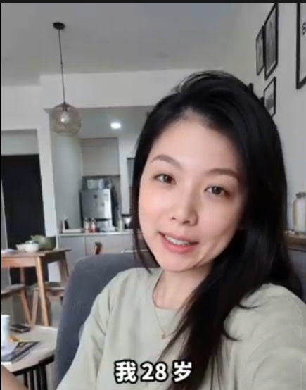
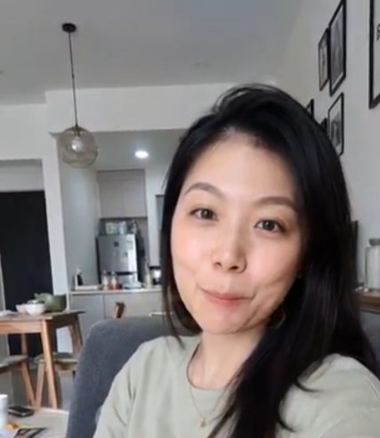

28岁的从容与美好：学会拥抱自我，打造属于自己的惬意生活节奏

二十多岁的时候，我们总在不断奔跑、探索和定义自我。当步入28岁这一年，许多人会发现，内心开始少了一份急躁，多了一份沉稳与从容。这是一个学会倾听内心、享受当下并更加关爱自己的美妙阶段。
“我今年28岁了，”慧婷坐在温馨舒适的客厅里，眼中闪烁着自信与温柔的光芒。“这个年纪让我明白，最好的生活状态不是迎合别人的期待，而是按自己的节奏舒心地生活。”
1. 拥抱28岁的独特魅力与智慧
28岁是一个充满力量与可能性的黄金时期。经历了初入职场的蜕变，我们逐渐掌握了生活的自主权，学会了如何在忙碌与休假之间找到完美的平衡点：
更清晰的自我认知： 明白了自己的喜好与追求，不再盲目跟风，懂得为真正重要的事情投入精力。
内心深处的独立与自信： 接纳自己的每一个面貌，学会用温柔而坚定的眼神看待生活中的各种挑战。
懂得品味生活的细节： 无论是一杯晨间咖啡、一本心仪的好书，还是布置温馨的家，都能带来满满的幸福感。

2. 打造充满温度与仪式感的居家生活
对于慧婷来说，打造一个温暖有爱的生活空间是滋养心灵的关键。把家里布置得整洁舒雅，点上一盏柔和的灯光，就能让疲惫的一天瞬间被温暖包围。
看着家中温馨的陈设，慧婷露出了幸福而惬意的微笑。学会享受独处的平静，也懂得与家人朋友分享喜悦，这种由内而外散发的满足感，正是岁月赋予我们最好的礼物。
“28岁不是年龄的界限，而是活出自我、拥抱自信与优雅的全新起点。”
每一个年龄段都有其独特的风景。当我们心怀感恩、眼中带笑地走过每一天，生活自会绽放出最绚丽的光彩。
总结
拥抱自己的年龄，珍惜每一个当下的瞬间。保持积极乐观的心态，用心经营生活里的每一份美好，你会在时光的流转中遇见越来越优秀的自己。
本故事传递积极向上、拥抱自我成长与追求美好品质生活的正能量理念。